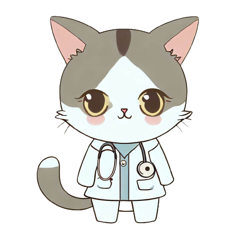

M
IND
H
ELPER
서비스 소개
간편 설문 테스트
간편 이미지 표정 테스트
감정일기
마이페이지
상담사 전용페이지
Sign in
Sign Out
{{ session.get('username') }}
님 환영합니다.
신뢰성 높은 마인드 헬퍼의 우울 감정 테스트
당신의 우울 감정 지수는 몇 점 ?
(우울 감정 자가진단) 검사 시작하기

우울증 자가진단 테스트 결과
나의 우울증 지수
점
검사 다시하기